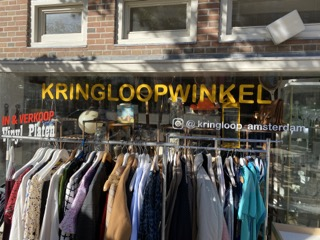

Info
Informatie over onze winkel
Onze winkel is opgericht in het jaar 1968. Het begon allemaal bij het verkopen van platen en de daarbij horende platenspelers.
Onze Kringloopwinkel zet zich in voor het bevorderen van een duurzame wereld waarin iedereen gelijkwaardig kan participeren.
In onze kringloopwinkel ontdek je dagelijks een gevarieerd en verrassend assortiment, variërend van vriendelijk geprijsde basisproducten tot unieke vintage parels. De diversiteit zorgt ervoor dat je nooit uitgekeken raakt.
Samen met jou dragen we bij aan een verbetering van het milieu. Jaarlijks verzamelen we meer dan zeven miljoen kilo textiel en huisraad, waarvan zo'n 76% een tweede leven krijgt. De meeste items vinden hun weg naar een nieuwe eigenaar via onze winkel. Wat niet verkocht kan worden, ondergaat een recyclingproces. Hierdoor verminderen we gezamenlijk de afvalberg en dragen we bij aan een vermindering van ruim 5 miljoen kilo CO2-uitstoot. Dit staat gelijk aan de CO2-opname van 737.000 bomen, wat overeenkomt met een bos ter grootte van zo'n 2.457 voetbalvelden. Dit streven we elk jaar opnieuw na, en dit is wat wij bedoelen met een groene wereld.
We verwelkomen graag de spullen die je niet meer nodig hebt. Je kunt ze direct afleveren bij onze winkels of eenvoudig een ophaalafspraak maken. Met zorg selecteren en controleren wij de ingebrachte producten, op zoek naar een nieuwe eigenaar die er blij mee zal zijn. Zo dragen we gezamenlijk bij aan duurzaam hergebruik.
In onze wereld is er ruimte voor werk voor iedereen. Ons streven is een inclusieve arbeidsmarkt waarin alle individuen volwaardig kunnen participeren. We bieden bijna 20 medewerkers een betaalde baan aan. Daarnaast zijn er vrijwilligers, scholieren en stagiaires actief in onze winkel, waarbij we extra werkervaring, scholing en begeleiding bieden. Hiermee vergroten we de kansen voor hen bij het vinden van een nieuwe baan.
